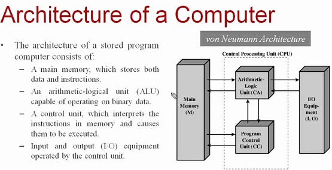

Computer architecture is a specification of how a set of software and hardware technology standards interact to form a computer system or platform. In short, computer architecture refers to how a computer system is designed and with which technologies it is compatible.Computer architecture is likened to the art of identifying the needs of the user / system / technology and creating a logical design and computer architecture is a set of rules and methods that describe the functionality, organization and implementation of computer systems.The main components of a typical computer system are the processor, the memory, the input / output devices and the communication channels that connect them. The processor is the workhorse of the system; it is the component that executes the program by performing arithmetic and logical data operations.
